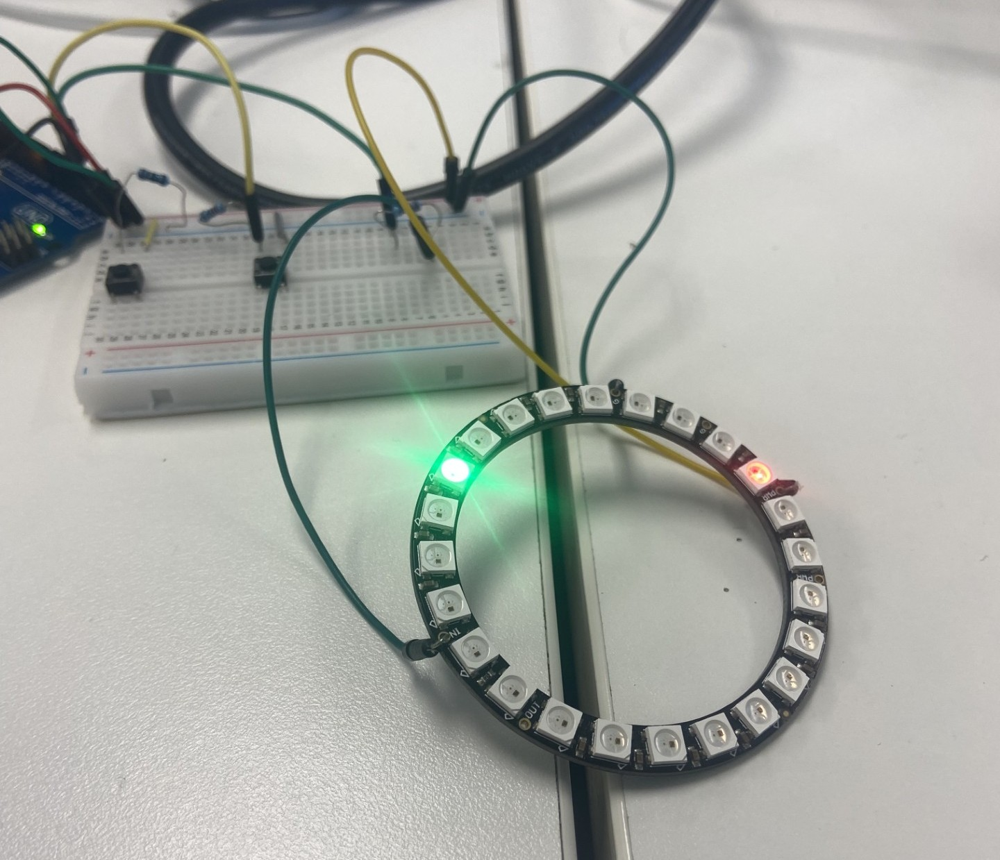
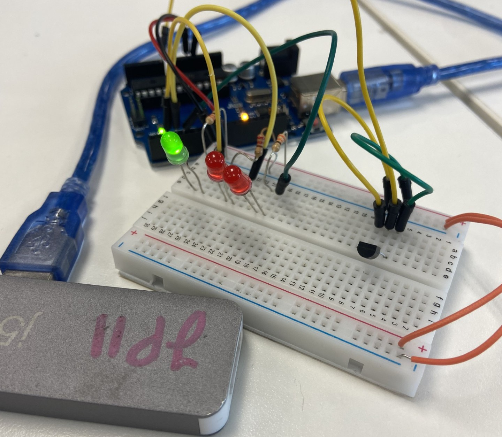
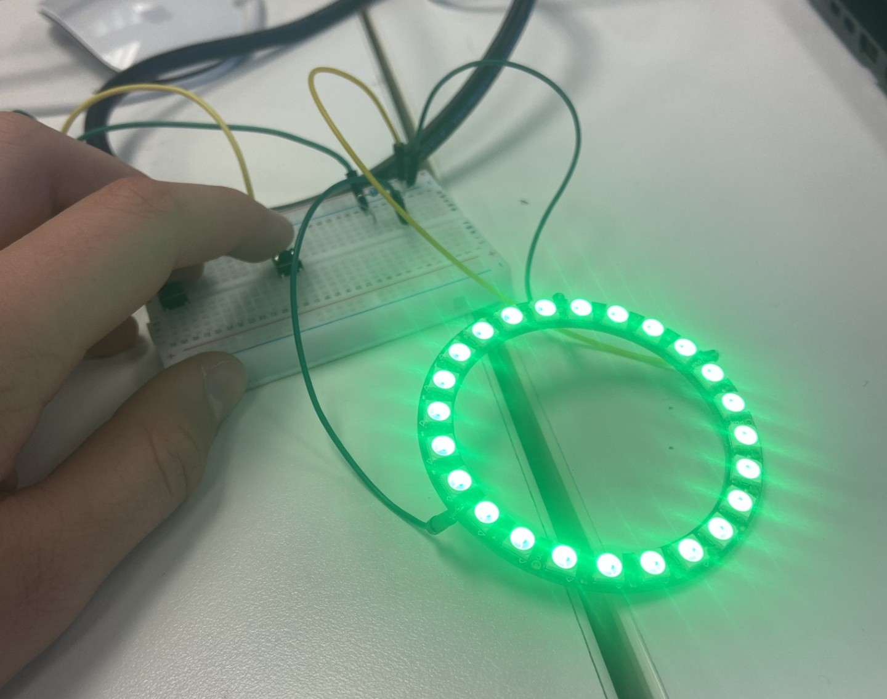
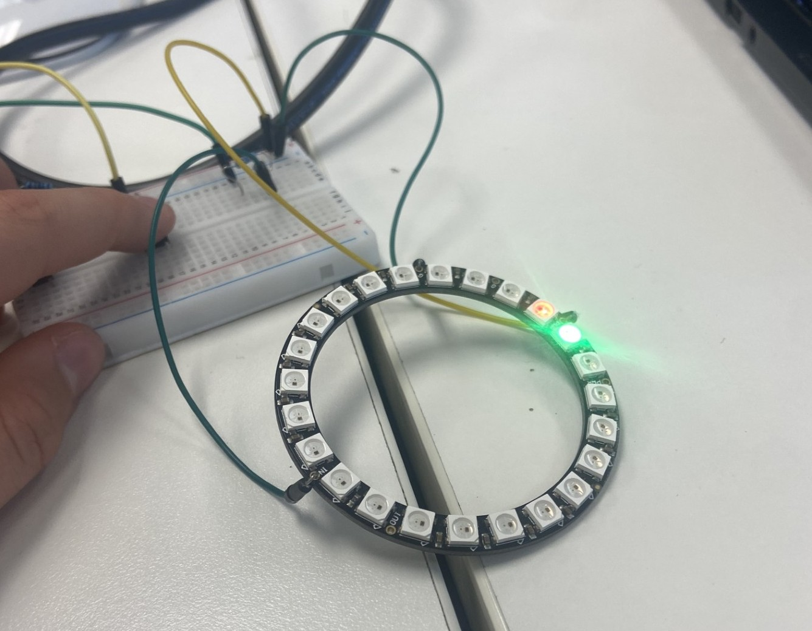

<!DOCTYPE html>
<html lang="en">
<head>
    <meta charset="UTF-8">
    <meta name="viewport" content="width=device-width, initial-scale=1.0">
    <title>Arduino C++</title>
    <link rel="stylesheet" href="style3.css">
</head>
<body>
    <ul class="navbarul">
        <div class="liimg"><a href="page4-blender.html" style="font-size:35px;">Arduino & C++</a></div>
        <div class="lii"><a href="page3-arduino.html" style="padding-right:30px; padding-left:30px; border: 2px solid white; text-align: center;">Overview</a></div>
        <div class="lii" style="padding-right: 10px;"><a href="page3-arduino.html">Gallery</a></div>
        <div class="lii"><a href="page3-arduino.html">Details</a></div>
    </ul>
    <div class="header_img">
        <h1>Arduino & C++</h1>
        
        
        
    </div>
    <div class="section details">
        <h2 style="text-align: left; font-size: 40px;">Details</h2>
        <p>My project goal was to use a NeoPixel ring to create a game like the arcade game, "Pop the Lock". This involved me creating three different modes, and coding a button to change between these modes. Mode 1 was the game that could be normal mode, second was a rainbow version of the game that could be the party mode, and the third was a clock that could be the focus mode.</p>
        <h2 style="text-align: left; font-size: 30px;">Development Overtime</h2>
        <p>At first I was planning to do the f1 light inspired modes, however when I had completed it I thought it was a bit boring and I still had some periods left so I decided to change it to a Pop The Lock arcade game for mode 0 and 1, with mode 2 staying the same. Mode 1 would also still be rainbow for party mode.</p>
        <h2 style="text-align: left; font-size: 30px;">Testing/Problems & Solutions</h2>
        <p>Our testing strategy was mostly centered around our button and the changing of modes. So was our problems. At first the button would not change the modes when pressed. This was because I had trouble understanding Debounce logic at first so I could not fix it. I watched youtube tutorials and asked chatgpt for code breakdowns and what certain lines meant. Once I had started to understand it, I started editing the code to fix minor problems and eventually it started working.</p>
    </div>
    <div class="section gallery">
        <h2 style="text-align: left; font-size: 30px;">Gallery</h2>
        <div class="slideshow-container">
            <!-- Full-width images with number and caption text -->
            <div class="mySlides fade">
                <div class="numbertext">1 / 4</div>
                
                <div class="text"> Arduino Breadboard with One green led lit up.</div>
            </div>
            <div class="mySlides fade">
                <div class="numbertext">2 / 4</div>
                
                <div class="text"> Ardunio NewPixel ring game, "Pop the Lock"</div>
            </div>
            <div class="mySlides fade">
                <div class="numbertext">3 / 4</div>
                
                <div class="text">Ardunio NeoPixel ring game, "Pop the Lock"</div>
            </div>
            <div class="mySlides fade">
                <div class="numbertext">4 / 4</div>
                
                <div class="text">Win animation of Ardunio NeoPixel ring game, "Pop the Lock" </div>
            </div>
            <!-- Next and previous buttons -->
            <a class="prev" onclick="plusSlides(-1)">&#10094;</a>
            <a class="next" onclick="plusSlides(1)">&#10095;</a>
        </div>
        <br>
        <!-- The dots/circles -->
        <div style="text-align:center">
            <span class="dot" onclick="currentSlide(1)"></span>
            <span class="dot" onclick="currentSlide(2)"></span>
            <span class="dot" onclick="currentSlide(3)"></span>
            <span class="dot" onclick="currentSlide(4)"></span>
        </div>
    </div>
    <script>
        let slideIndex = 1;
        showSlides(slideIndex);
        // Next/previous controls
        function plusSlides(n) { showSlides(slideIndex += n); }
        // Thumbnail image controls
        function currentSlide(n) { showSlides(slideIndex = n); }
        function showSlides(n) {
            let i;
            let slides = document.getElementsByClassName("mySlides");
            let dots = document.getElementsByClassName("dot");
            if (n > slides.length) {slideIndex = 1}
            if (n < 1) {slideIndex = slides.length}
            for (i = 0; i < slides.length; i++) { slides[i].style.display = "none"; }
            for (i = 0; i < dots.length; i++) { dots[i].className = dots[i].className.replace(" active", ""); }
            slides[slideIndex-1].style.display = "block";
            dots[slideIndex-1].className += " active";
        }
    </script>
    <div class="section overview">
        <h2 style="text-align: left; font-size: 30px;">Overview of Code</h2>
        <p> Here is my code I used for my NeoPixel ring to turn it into a game:</p>
        <pre>
#include <FastLED.h>
#define LED_PIN 4 // Lights plugged into pin 4 on board
#define NUM_LEDS 24 // 24 Lights on Neo Ring in total
 
CRGB leds[NUM_LEDS];
 
const int BUTTON_PIN = 2;       // This button toggles modes
const int DIR_BUTTON_PIN = 3;   // This one toggles direction
const unsigned long DEBOUNCE_DELAY = 50; // 50 millisecond delay
 
int mode = 0; // Makes it so it starts in mode 0
 
// Tracks pressing of mode button
int lastButtonState = HIGH;
unsigned long lastDebounceTime = 0;
 
// Same thing for direction button
int lastDirButtonState = HIGH;
unsigned long lastDirDebounceTime = 0;
 
bool directionForward = true; // Keeps track of the direction with true = right and false = left
 
// Animation timing so that the light does not move instantly af
unsigned long lastUpdate = 0;
const unsigned long ANIM_DELAY = 150; // 150 millisecond delay
 
int animIndex = 0; // keeps track of what led moving light is
 
// Timer for mode 2
const unsigned long TIMER_DURATION = 30UL * 60UL * 1000UL; // 30 minutes in milliseconds
unsigned long timerStart = 0;
bool timerRunning = false;
 
// Game variables
const int TARGET_POS = NUM_LEDS / 2;  // Target light is on middle light at 24/2 = 12
const int HIT_WINDOW = 1;  // The window you have to hit in
int hitCount = 0;  // Counts the ammount of times you have hit the target
const int WIN_HITS = 3;  // The ammount of time you have to hit target before you win
bool gameWon = false;
 
void setup() {
  pinMode(BUTTON_PIN, INPUT_PULLUP);
  pinMode(DIR_BUTTON_PIN, INPUT_PULLUP);
 
  FastLED.addLeds<WS2812, LED_PIN, GRB>(leds, NUM_LEDS);
  FastLED.setBrightness(70);
  Serial.begin(9600);
  FastLED.clear();
  FastLED.show();
 
  Serial.println(digitalRead(BUTTON_PIN));  // Check if it's HIGH or LOW
}
 
void loop() {
  //Checks both buttons for a press
  handleModeButton();
  handleDirectionButton();
 
  unsigned long now = millis();
  if (now - lastUpdate > ANIM_DELAY) {
    lastUpdate = now;
    runModeStep(mode); // Do current mode (Which when it starts will be 0 as variable mode = 0)
  }
}
 
void handleModeButton() {
  int reading = digitalRead(BUTTON_PIN); //Checks if changing mode button was pressed
 
  if (reading != lastButtonState) {
    lastDebounceTime = millis(); //Reset timer if button is pressed so it can check if it was at least 50 ms
  }
 
  if ((millis() - lastDebounceTime) > DEBOUNCE_DELAY) { // If it was 50ms or more then we...
    static int currentButtonState = HIGH;
    if (reading != currentButtonState) {
      currentButtonState = reading; // Flip Direction
      if (currentButtonState == LOW) {
        // Button pressed, change mode
        mode++; // Adds 1 to mode variable so new mode starts
 
        if (mode > 2) mode = 0; // This line makes it so that after mode 2, It goes back to mode 0, making it so it can infinetly cycle through the modes
 
        animIndex = 0;
        FastLED.clear();
        FastLED.show();
 
        if (mode == 2) {
          timerStart = millis();
          timerRunning = true;
        } else {
          timerRunning = false;
        }
 
        if (mode == 0 || mode == 1) {
          hitCount = 0;
          gameWon = false;
          directionForward = true; // reset direction on mode change
        }
      }
    }
  }
  lastButtonState = reading;
}
 
void handleDirectionButton() {
  int reading = digitalRead(DIR_BUTTON_PIN);
 
  if (reading != lastDirButtonState) {
    lastDirDebounceTime = millis();
  }
 
  if ((millis() - lastDirDebounceTime) > DEBOUNCE_DELAY) {
    static int currentDirButtonState = HIGH;
 
    if (reading != currentDirButtonState) {
      currentDirButtonState = reading;
 
      if (currentDirButtonState == LOW) {
        // Direction button pressed
        directionForward = !directionForward; // flip direction
 
        if (mode == 0 || mode == 1) {
          int pos1 = animIndex % NUM_LEDS;
 
          if (abs(pos1 - TARGET_POS) <= HIT_WINDOW) {
            hitCount++; // if its hit target within the window then it will add one to your hit count, which at 3 you win
           
            if (hitCount >= WIN_HITS) {
              gameWon = true;
            }
          }
        }
      }
    }
  }
  lastDirButtonState = reading;
}
 
void runModeStep(int m) {
  if (m == 0 || m == 1) { // game modes with moving lights
    FastLED.clear();
 
    if (gameWon) {
      fill_solid(leds, NUM_LEDS, CRGB(0, 255, 0)); // If the game is won, meaning the taget led has been hit 3 times, then the screen with flash green
      FastLED.show();
      return;
    }
 
    leds[TARGET_POS] = CRGB(50, 0, 0); // Makes the target led a dim red colour
 
    int pos1 = animIndex % NUM_LEDS;
 
    if (m == 0) {
      // Mode 0: green LEDs
      leds[pos1] = CRGB(0, 255, 0); //Makes moving lights green for mode 0
    } else if (m == 1) {
      // Mode 1: rainbow LEDs
      uint8_t hue1 = map(pos1, 0, NUM_LEDS, 0, 255);
      leds[pos1] = CHSV(hue1, 255, 255); // Rainbow colour moving light for mode 1
 
    }
 
    FastLED.show();
 
    animIndex = directionForward ? (animIndex + 1) % NUM_LEDS : (animIndex - 1 + NUM_LEDS) % NUM_LEDS; //Moving the led left or right
  }
  else if (m == 2) {
    timerStepCountup(); // Timer Mode for studying
  }
}
 
void timerStepCountup() { // Fills up the lighst slowly over the 30 mins
  if (!timerRunning) {
    FastLED.clear();
    FastLED.show();
    return;
  }
 
  unsigned long elapsed = millis() - timerStart; // Calculates how much time as passed since timer was started (When button was pressed) so we know it for debouncing the button
 
  if (elapsed > TIMER_DURATION) { // If more time has gone since the button was pressed than 30 mins, then it turns all the lights green
    FastLED.clear();
    for (int i = 0; i < NUM_LEDS; i++) {
      leds[i] = CRGB(0, 255, 0);
    }
    FastLED.show();
    timerRunning = false;
    return;
  }
 
  int ledsLit = map(elapsed, 0, TIMER_DURATION, 0, NUM_LEDS);
 
  FastLED.clear();
  for (int i = 0; i < ledsLit; i++) {
    leds[i] = CRGB(0, 255, 0); //Fills the NeoPixel Ring over time with green leds
  }
  FastLED.show();
}
</pre>
</div>
</body>
</html>

